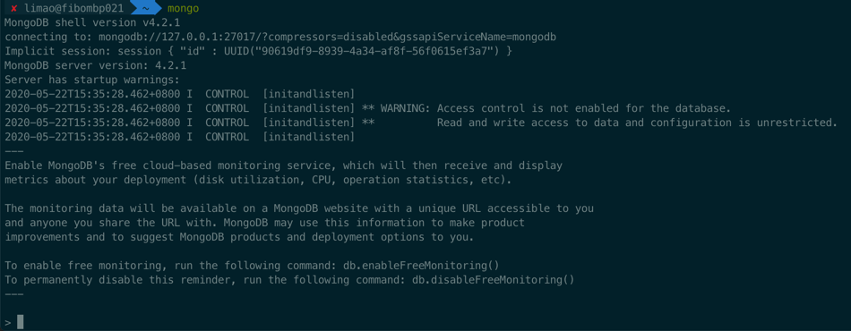
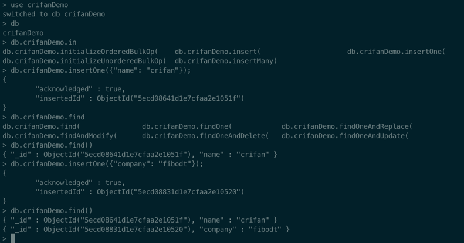

命令行shell
MongoDB在安装后，自带mongo shell，是个交互式终端。可以在里面以命令行方式操作数据库。
最新版需要单独安装shell
最新的社区免费版mongodb-community的shell需要单独安装
brew install mongodb-community-shell
启动mongo shell
在命令行中输入
mongo
回车后，即可进入shell界面：

基本语法
切换到想要进入的数据库
use dbToSwitch
举例：
> use log
switched to db log
确认当前所在是哪个数据库
语法：
db
举例：
> db
admin
和
> db
log
新建用户
在创建新用户之前，先要用有权限的用户，比如 admin 登录进去，才能有权限创建新用户
注：此处之前已创建过admin超级用户，所以先去登录进入
mongo --host localhost --port 32018 -u root -p P@w --authenticationDatabase admin
然后再去给还没创建的新数据库去创建新用户
需要先去切换到对应的（虽然此时还不存在的）新的数据库：
use newDbName
然后才能（在当前数据库下）创建新用户：
db.createUser({
user: "newUserName",
pwd: "yourPassword",
roles: [ { role: "dbOwner", db: "newDbName" } ]
})
然后可以确认一下是否创建成功：
show users
即可看到新创建的用户。
举例
创建数据库并新增数据
举例：

过程解释：
直接use crifanDemo
> use crifanDemo
switched to db crifanDemo
即可创建新的数据库crifanDemo
> db
crifanDemo
用db查看当前所在数据库
后续用：
> db.crifanDemo.insertOne({"name": "crifan"});
{
"acknowledged" : true,
"insertedId" : ObjectId("5ecd08641d1e7cfaa2e1051f")
}
去真正写入数据，才会真正（自动）创建一个database。
然后再去确认数据的确已经写入，可以用find去查找当前所有数据
在输入了db.crifanDemo.find，再按Tab键，则可以自动匹配出相关命令：
> db.crifanDemo.find
db.crifanDemo.find( db.crifanDemo.findOne( db.crifanDemo.findOneAndReplace(
db.crifanDemo.findAndModify( db.crifanDemo.findOneAndDelete( db.crifanDemo.findOneAndUpdate(
然后用find可以找出当前的所有的数据：
> db.crifanDemo.find()
{ "_id" : ObjectId("5ecd08641d1e7cfaa2e1051f"), "name" : "crifan" }
再去新增一条数据：
> db.crifanDemo.insertOne({"company": "company_name"});
{
"acknowledged" : true,
"insertedId" : ObjectId("5ecd08831d1e7cfaa2e10520")
}
再去find即可看到数据的确增加到2条了：
> db.crifanDemo.find()
{ "_id" : ObjectId("5ecd08641d1e7cfaa2e1051f"), "name" : "crifan" }
{ "_id" : ObjectId("5ecd08831d1e7cfaa2e10520"), "company" : "company_name" }
find也支持参数查找，比如：
> db.crifanDemo.find({"name": "crifan"})
{ "_id" : ObjectId("5ecd08641d1e7cfaa2e1051f"), "name" : "crifan" }
以及支持更多其他高级用法，比如搜索条件支持正则：
> db.crifanDemo.find({"name": {$regex: "cri"}})
{ "_id" : ObjectId("5ecd08641d1e7cfaa2e1051f"), "name" : "crifan" }
更多数据查询和用法，详见后面章节：
想要给新的暂时还不存在的数据库log中创建用户log
具体过程是：
> use log
switched to db log
> db.createUser({
... user: "log",
... pwd: "NL2@18Log",
... roles: [ { role: "dbOwner", db: "log" } ]
... })
Successfully added user: {
"user" : "log",
"roles" : [
{
"role" : "dbOwner",
"db" : "log"
}
]
}
> show users
{
"_id" : "log.log",
"user" : "log",
"db" : "log",
"roles" : [
{
"role" : "dbOwner",
"db" : "log"
}
]
}
清空旧用户创建新用户
查看（当前数据库的）用户：
show users;
举例
> use admin
switched to db admin
> show users
{
"_id" : "admin.root",
"user" : "root",
"db" : "admin",
"roles" : [
{
"role" : "root",
"db" : "admin"
}
]
}
> use gridfs
创建用户：
- 切换到amind数据库
- 清除掉admin的之前其他用户
- 创建一个叫root的，角色是root的用户（拥有超级管理员，操作任意其他数据库的权限）
> use admin
switched to db admin
> db.runCommand({dropAllUsersFromDatabase: 1})
{ "n" : 1, "ok" : 1 }
> db.createUser({
... user: "root",
... pwd: "pwd",
... roles: [ { role: "root", db: "admin" } ]
... })
Successfully added user: {
"user" : "root",
"roles" : [
{
"role" : "root",
"db" : "admin"
}
]
}
> show users
{
"_id" : "admin.root",
"user" : "root",
"db" : "admin",
"roles" : [
{
"role" : "root",
"db" : "admin"
}
]
}
查看当前用户
show users
举例：
> show users
{
"_id" : "admin.root",
"user" : "root",
"db" : "admin",
"roles" : [
{
"role" : "root",
"db" : "admin"
}
]
}
删除用户
语法：
db.dropUser("userToDelete")
举例：
> db.dropUser("log")
true
删除数据库
> db.dropDatabase()
{ "dropped" : "storybook", "ok" : 1 }
从GridFS中找歌曲类型的文件
> db.fs.files.find({"metadata.resourceType": "song"}).limit(2).pretty()
{
"_id" : ObjectId("5b21d3787f4d384d04543f6e"),
"contentType" : "audio/x-ms-wma",
"chunkSize" : 261120,
"metadata" : {
"song" : {
"singers" : [ ]
},
"fitAgeStart" : 2,
"topics" : [
"Fingerplay",
"Animal",
"Weather"
],
"storybook" : {
"publisher" : "",
"isFiction" : "",
"lexileIndex" : "",
"awards" : "",
"authors" : [ ],
"foreignCountry" : ""
},
"keywords" : {
"fromName" : [
"animal animal",
"animal"
],
"other" : [
"Sun",
"Rain",
"water spout"
],
"fromContent" : [ ]
},
"name" : "Animals, Animals",
"resourceType" : "song",
"mainActors" : [
"Spider"
],
"contentAbstract" : "",
"isSeries" : true,
"series" : {
"number" : 1,
"name" : "Wee Sing-Animals, Animals, Animals"
},
"fitAgeEnd" : 6,
"fileInfo" : {
"isAudio" : true,
"contentType" : "audio/x-ms-wma",
"name" : "Animals, Animals.wma",
"suffix" : "wma"
}
},
"filename" : "Animals, Animals.wma",
"length" : 2277430,
"uploadDate" : ISODate("2018-06-14T02:31:20.767Z"),
"md5" : "b334806c280cc37c4b873a8e2a2086cd"
}
{
"_id" : ObjectId("5b21d3787f4d384d04543f78"),
"contentType" : "audio/x-ms-wma",
"chunkSize" : 261120,
"metadata" : {
"song" : {
"singers" : [ ]
},
"fitAgeStart" : 2,
"topics" : [
"Fingerplay",
"Family",
"Others"
],
"storybook" : {
"publisher" : "",
"isFiction" : "",
"lexileIndex" : "",
"awards" : "",
"authors" : [ ],
"foreignCountry" : ""
},
"keywords" : {
"fromName" : [
"old macdonald",
"old Macdonald farm"
],
"other" : [
"knives",
"forks",
"mirror",
"table",
"looking glass",
"cradle"
],
"fromContent" : [ ]
},
"name" : "Old Macdonald Had a Farm",
"resourceType" : "song",
"mainActors" : [
"mother",
"baby"
],
"contentAbstract" : "",
"isSeries" : true,
"series" : {
"number" : 2,
"name" : "Wee Sing-Animals, Animals, Animals"
},
"fitAgeEnd" : 6,
"fileInfo" : {
"isAudio" : true,
"contentType" : "audio/x-ms-wma",
"name" : "Old Macdonald Had a Farm.wma",
"suffix" : "wma"
}
},
"filename" : "Old Macdonald Had a Farm.wma",
"length" : 1924864,
"uploadDate" : ISODate("2018-06-14T02:31:21.192Z"),
"md5" : "a2b65c25d117d428beaa346b0b7e232f"
}
统计歌曲类型文件总数
> db.fs.files.find({"metadata.resourceType": "song", "metadata.fileInfo.suffix": "mp3"}).count()
378
> db.fs.files.find({"metadata.resourceType": "song", "metadata.fileInfo.suffix": "wma"}).count()
523
> db.fs.files.find({"metadata.resourceType": "song"}).count()
901